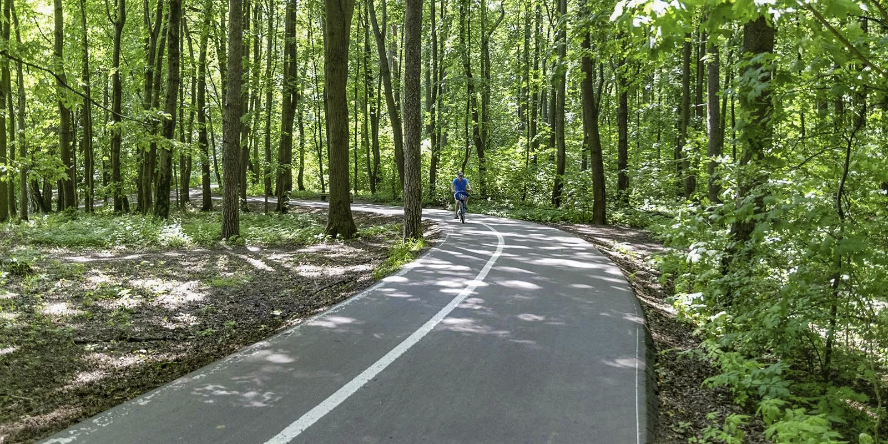

Ботанический сад
Идеальное место для велопрогулок на свежем воздухе. Здесь есть выделенные велосипедные дорожки и множество самых разнообразных маршрутов, поражающих своей красотой в любое время года. Можно как и позаниматься спортом, так и просто отдохнуть, наслаждаясь свежим воздухом и красивыми видами.